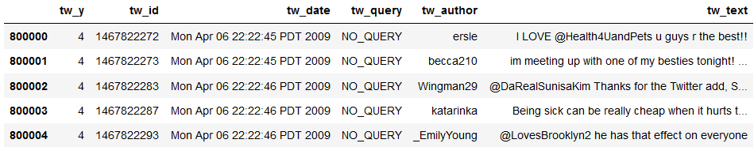
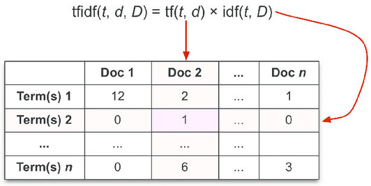
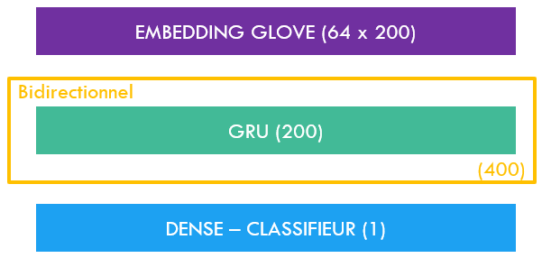
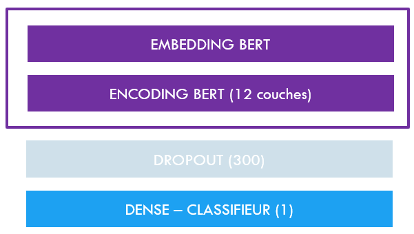

Are compared here :
Here is what our dataset looks like :
Each model we are using here requires a different kind of preprocessing :
Also very important to take into consideration : the number of words in our vocabulary. Using a CountVectorizer, we have determined that a good number of words to consider here would be 40,000: words that are not recognized are replaced by "0".
TF-IDF is a weighting system allowing to determine how significant words are to a text (here to a Tweet) within a corpus (here our dataset).
The implementation made by Scikit-learn returns a sparse matrix that can directly be set as input to a classifier such as LogisticRegressionClassifier. Doing so, and enjoying the luxury of a hyperparameter-tuning via cross-validation since this model is very light-weight, here are the results we obtained with our execution :
| Accuracy | Recall | AUC |
|---|---|---|
| 0.774 | 0.779 | 0.774 |
These results are a good baseline, that we hope will be overmatched by our following methods.
When dealing with neural networks, the number of ways to conduct our work approximates infinity, the reason being that you can add as many layers as you want, tune their parameters, shuffle their order, etc. Hence we kept it very simple, leaving to the reader the possiblity to ellaborate if needed.
The base model is as follow :
As you can see, there is no superficial layer, we used only what was necessary to reach a prediction :
Here are the results we obtain when applied to our dataset :
| Accuracy | Recall | AUC |
|---|---|---|
| 0.815 | 0.797 | 0.896 |
Not bad, right ? The neural networks have indeed outperformed the Bag-of-Words approach. Now let's see what the transformers have to say about this.
Transformers are very costly models to develop. Therefore we will only fine-tune a pre-trained model to our needs. Fortunalety, there is a variety of pre-trained models for text classification already available, and even one (BERTweet) that has been trained on Tweets - perfect for us.
BERT models are delivered with the entire artillery: tokenizers that match the chosen model, and more importantly trainers that help you fine-tune for a specific purpose (here: text classification). The trainer we chose only includes encoders. Indeed, the transformers' architecture can include both encoders and decoders, but the latter are only required when your model has to produce a text output (translation, text completion, etc.), and is useless on text classification (the "mere" task of determining probabilities out of the model's weights).
The sole fine-tuning of this model to our needs still took about 7 hours to complete on GPU (We said it was costly!). But well, the results speak for themselves :
| Accuracy | Recall | AUC |
|---|---|---|
| 0.862 | 0.850 | 0.862 |
As we have illustrated here, the state-of-the-art NLP approach is the one that performed the best on the task at stake. But you also may want to consider other parameters depending on your other requirements. For instance, if the time of training or the disk space occupied by the trained model are issues for you, you may prefer a more classic neural network method despite its poorer quality of predictions.